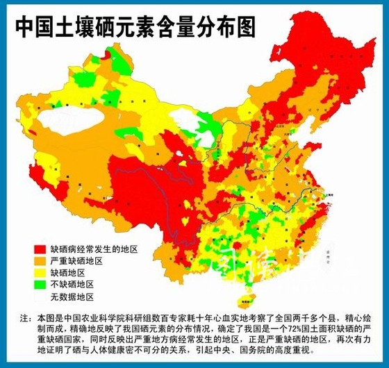

浅谈硒
硒的分类
硒在自然界的存在方式分为两种：无机硒和有机硒。无机硒一般指亚硒酸钠和硒酸钠，从金属矿藏的含硒元素的矿石粉末副产品中获得。后者是硒通过生物转化与氨基酸结合而成，一般以硒蛋氨酸的形式存在。
分布
硒是人体必需的微量元素，而硒在地球表面分布是极不平衡的，我国约有72%地区缺硒，特别是从东北到西南的15个省市自治区的部分地区构成了"贫硒地带"。因此，中国著名营养学家于若木提出，[1]我国要像抓补碘那样抓好补硒工作。 一般食品的含硒量都在0.2ppm[1]以下，干牡蛎、干海米的含硒量最高，也不到3ppm，野生和按常规方法栽培的食菌的含硒量一般不会超过1ppm。
作用
有机硒一般以硒蛋氨酸形式存在，依循蛋氨酸代谢途径代谢，参与蛋白的合成，容易在组织内储存、吸收；被人体吸收后可迅速的被人体利用，有效改善人体内血硒状况。
大家知道，地球和地球上的万物都是由化学元素组成的。作为地球上化学和生物进化中的万物之灵，人体的化学组成在质和量上都与地球大致相同，几乎含有地球表层存在的所有元素。这些元素，按其含量多少被分为常量元素和微量元素。 常量元素包括氧、碳、氢、氮、钙、硫、磷、钠、钾、氯、镁等11种，它们组成人体的基本结构，占人体重量的99.95%，其中氢和氧结合的水(H2O)就占人体总重量的65%。 硒从1817年被发现后的100多年，一直被当成有毒元素。但是，1957年发现它是防止营养性肝坏死的一种保护因子；1973年发现硒是谷胱甘肽过氧化物酶的活性成分；1980年我国发现硒缺乏是克山病的重要病因。人们逐渐认识，象摄取淀粉和蛋白质一样，我们每天必须摄入适量的硒。1988年中国营养学会推荐的"每日膳食中营养素供应量与我国的膳食指南"中, 把硒和能量、蛋白质、几种重要维生素以及钙、铁、锌、碘等并列为15种每日膳食必需营养素。
优缺点
有机硒最好的是硒麦芽，通过发芽过程的吸收转化作用，使硒富集在麦芽所含的氨基酸、蛋白质等分子上，从而获得的一种富含天然有机硒的生物制品。与亚硒酸钠等无机硒相比，硒麦芽具有食用安全、无毒副作用、吸收利用率高、营养价值高（如高水平的维生素，高质量的蛋白等）等优点。
根据中国军事医学科学院硒研究小组最新研究资料显示，如今许多号称有机硒的产品质量差别极大，并非有机硒产品都具有类似的品质及效果。中国微量元素科学研究会副理事长梁东东教授介绍说，硒是人体必需的微量元素，而中国有七成地区缺硒。针对人体缺硒的状况，如今各国专家建议继续大力发展富硒产品的开发研制。同无机硒强化剂相比，生物有机硒安全性高，不易发生中毒，易被人体吸收利用，补硒效率高，特别受欢迎。
这位权威专家还介绍说，无机硒强化剂的吸收和利用不是很理想，其生物有效性低，毒性较大，中毒量与需要量之间范围小，因而被严格限制其使用量。如今，日本、美国等发达国家已经禁止在食品甚至动物饲料中添加亚硒酸钠等无机硒。
武汉工业学院教授李庆龙说，我国的硒强化剂包括无机硒强化剂和有机硒强化剂两类，无机硒强化剂主要有亚硒酸钠和硒酸钠；有机硒强化剂主要有富硒酵母、硒化卡拉胶（硒酸酯多糖）硒蛋白等。
可食用有机硒
作用
硒能直接作用于病毒，抑制病毒在体内的复制，并能参与细胞的修复，预防多种病毒性疾病。（如乙肝、心炎等）硒能中和或转化自由基的物质，抗氧化，从而祛除自由基对人体的损害，有延缓衰老的作用。硒具有和胰岛素相同的作用，可以不依赖胰岛素来调节体内糖份，可以延缓、减轻、防止糖尿病并发症的产生。硒是癌细胞的杀伤剂，能减轻放、化疗的毒副作用，降低抗癌药物对肾、骨髓和肠胃的毒性，缓解患者的病痛。硒与污染食物、蓄积体内的铅、汞、镉等重金属有很强的亲和力，与其结合形成硒-金属-蛋白质复合物，直接排出体外，起到解毒和排毒的作用。
做饲料添加物
作用
能有效预防牲口的下痢和贫血。增强抗应激能力。提高饲料转化率和适口性。绿色饲料添加剂。无任何毒副作用，无任何药物残留。
硒麦芽介绍
硒麦芽是以小麦作为硒转化的活性载体，通过发芽过程的吸收转化作用，使硒富集在麦芽所含的氨基酸、蛋白质等分子上，从而获得的一种富含天然有机硒的生物制品。与亚硒酸钠等无机硒相比，硒麦芽具有食用安全、无毒副作用、吸收利用率高、营养价值高（如高水平的维生素，高质量的蛋白等）等优点。 是经中国预防医学科学院严格检测、国家卫生部批准生产的一种高效、无任何副作用的生物制剂，是现代生物医学领域的高科技结晶。美国著名微量元素专家W•Mertz博士等编著的《人和动物的微量元素营养》（朱莲珍•主译校）一书中指出：麦硒、酵母硒、硒酸盐、覃类硒，其中麦硒的生物活性最高，吸收利用率最好。临床证明，麦硒的补硒效果最为理想，硒麦芽是硒发展的最高阶段，与同类硒相比抑制作用高达30倍。
硒麦芽——高效抗癌
硒麦芽能阻断多种致癌因素诱导的DNA损伤,起到防癌作用，即起到抗癌细胞增殖的作用。从细菌试验到动物试验直至人体试验，各种生化指标的变化显示了硒麦芽具有防癌作用的可能性。硒麦芽对多种致癌因素（AFB1、 紫外辐射、苯并龙）诱导的癌变都有阻断作用，硒麦芽防癌是基于细胞癌变及增殖的共同机制和普遍规律，对癌变过程进行阻断。因此，预计可对任何致癌因素引起的癌变起到预防作用。硒麦芽的抗癌机理是增强生物自身调节作用，调节人体自身的抗癌因素，改变癌细胞中异常的生化变化，它不同于大多数的抗癌药物一一这些抗癌药物是经细胞毒作用而实现抗癌作用的。
硒-抗癌之王
硒是人体不可或缺的微量元素，并且是一种能力很强的抗氧剂，能够有效的清除致癌因子——自由基，有"抗癌之王"的美誉。科学家调查了20个国家的癌症死亡率和每个人硒摄取量之间的关系后发现，硒的摄入量少，癌发病率和死亡率就增高，其中尢以结肠癌、胰腺癌、卵巢癌、前列腺癌和男性的肺癌及皮肤癌等最为明显。据统计，全世界有42个国家和地区缺硒。中国营养学会做的一项调查表明，我国有三分之二的地区约7亿人口处于缺硒状态。
1、改善免疫功能，提高抗癌能力
2、提高机体抗氧化能力
3、阻断肿瘤血管形成，防止肿瘤复发、转移
4、从分子水平上抑制肿瘤发生
5、增强放、化疗的疗效
硒具有抗氧化作用
硒具有抗氧化作用，是自由基的清除剂，具有抗衰老的功效。人体内抗氧化作用差，若不能及时清除自由基时，细胞的衰老速度明显加快。维生素E是女人保持青春的"压箱宝贝"，对延缓衰老，保持青春活力有很大作用。硒与维生素E起协同作用，维生素E结合于生物膜上，保护膜免受自由基的攻击与过氧化损伤，可以使脂褐素(老年斑)的出现推迟。硒能增强人体免疫功能、抗氧化、延缓衰老，并能有效抑制肿瘤生长，对手术和放化疗治疗后的患者有很好的辅助改善作用。